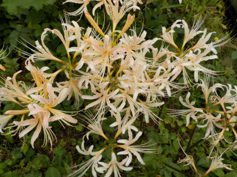
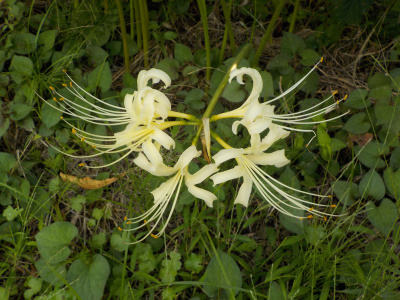
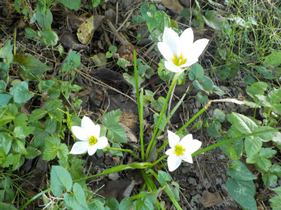
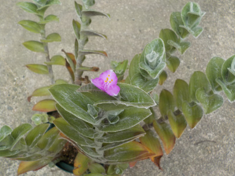
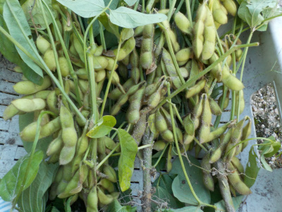
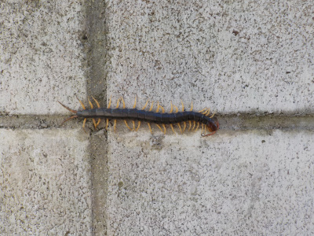

遊びで植物を育てよう
2022/09/18
白い彼岸花はそろそろ終わり。

花が少し茶色くなってきました。そろそろ終わりです。
約1週間楽しめました。
【9月TOP】
【日記TOP】
【園芸TOP】
2022/09/11
もう白い彼岸花が咲いていました。

お彼岸はまだ先ですが、もう彼岸花が咲いていました。
このホームページで過去の開花を調べたところ、2021年は9/19、2018年は9/23に写真を撮っていました。
今年は早いですね。
白い彼岸花は毎年見るのを楽しみにしているので、毎年写真を撮ってると思っていましたが、案外写真を撮っていなかったです。
【9月TOP】
【日記TOP】
【園芸TOP】
2022/09/11
ブラックベリーの茂みの下でタマスダレが咲いています。

ブラックベリーが茂っている場所の真下で、ほぼ日が当らないですが花が咲いてました。
雑草もあまり生えないような場所でよく育ってますね。強い草ですね。
【9月TOP】
【日記TOP】
【園芸TOP】
2022/09/06
トラデスカンチアが咲きました。

葉っぱが大きく育ったので、花がとっても小さく見えます。
葉っぱを楽しんだ方がいいですね。
【9月TOP】
【日記TOP】
【園芸TOP】
2022/09/04
今晩は枝豆を茹でます。

枝豆は新鮮なうちに茹でましょうって聞くので、収獲したその日のうちに茹でます。
でもお店で買ったったらあんまり新鮮ではないですよね？たぶん。
どうなっているんだろう？遠くから輸送して店頭に並んで購入するまでに2日とか経ってそう。それくらい問題ないのかな？
お店で買うのは冷凍ものの方が鮮度がいいのかな？
【9月TOP】
【日記TOP】
【園芸TOP】
2022/09/04
家の裏でムカデ発見。

植木鉢の下にムカデがいました。自宅でムカデを見たのは初めてです。
過疎化のせい？地球温暖化のせい？
【9月TOP】
【日記TOP】
【園芸TOP】
過去の日記
【2024年9月の日記】
【2023年9月の日記】
【2022年9月の日記】
【2021年9月の日記】
【2020年9月の日記】
【2019年9月の日記】
【2018年9月の日記】
【2017年9月の日記】
【2016年9月の日記】
【2015年9月の日記】
【2014年9月の日記】
【2013年9月の日記】
【2012年9月の日記】
【9月TOP】
【日記TOP】
【園芸TOP】
台風の季節です。
【おいしいものを食べよう。】【しっかり寝よう。】
【ソロ活をしよう!】【季節感のあることをしよう。】【動画視聴はほどほどに。】【当サイトの全てのコンテンツは無断転載禁止です。】